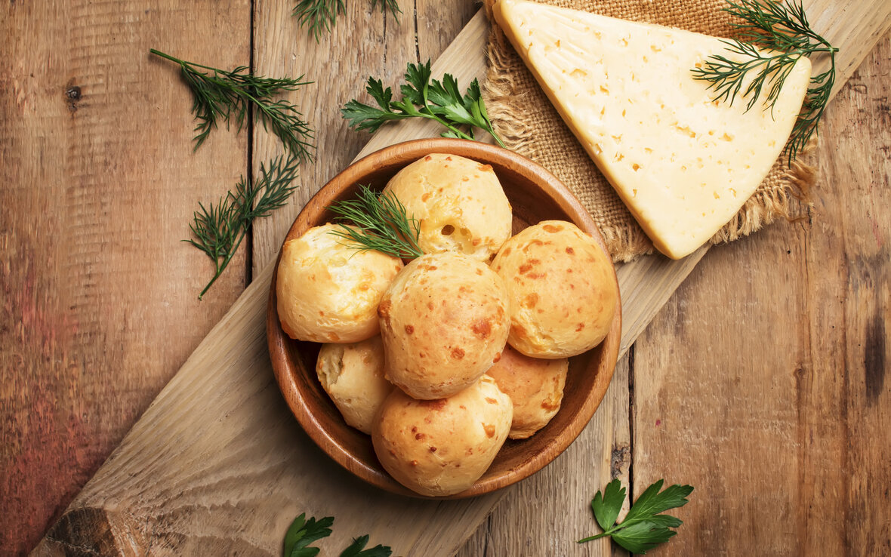
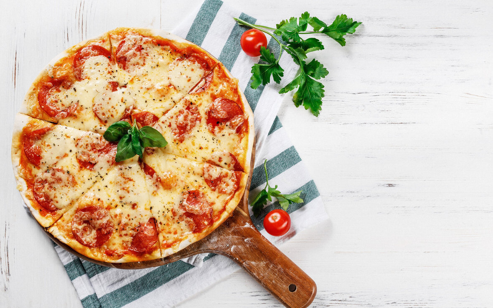
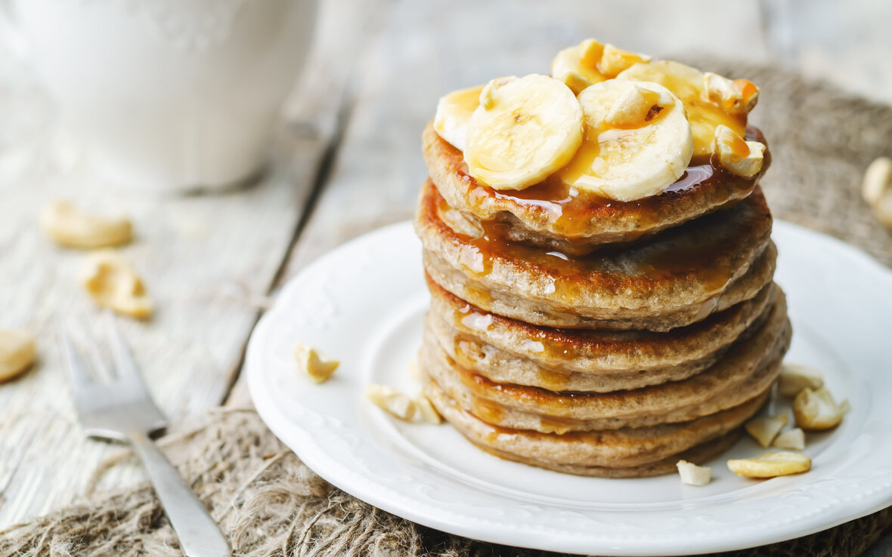

Pão de queijo
Modo de Preparo
Amasse até soltar das mãos (caso precise um pouquinho a mais de polvilho, coloque aos poucos até que
chegue ao ponto de enrolar). Faça bolinhas, coloque em forma untada e asse em forno pré-aquecido bem
quente. Se achar necessário, acrescente sal. Asse até ficarem douradinhos levemente.
- Ingredientes
- 1 caixinha de creme de leite (200 ml)
- 1 copo (requeijão) de queijo ralado (misturei parmesão e mussarela ralada)
- 1 copo (requeijão) de polvilho (usei polvilho doce)
Massa de Pizza
Modo de Preparo
Em uma tigela, misture a farinha e o iogurte; misture a massa até formar uma bola. Coloque a massa em
uma superfície enfarinhada e deixe sovar por 5-8 minutos. Com um rolo de macarrão, deixe a massa em
formato de pizza e depois adicione as coberturas. Pré-aqueça o forno. Coloque a pizza no forno em
temperatura máxima por 12 minutos.
- Ingredientes
- 1 xícara de farinha pronta com fermento
- 1 xícara de iogurte Grego ou natural
- Farinha extra para polvilhar a superfície
Panqueca de banana
Modo de Preparo
Amasse as bananas e acrescente a aveia, misturando bem. Depois, faça bolinhas no formato de pequenos
biscoitos e coloque para assar em uma forma untada por 15 minutos em forno pré-aquecido a 175 graus. Se
você quiser, também pode adicionar uma pitada de canela em pó, um punhadinho de frutos secos — como
nozes e amêndoas, por exemplo — ou gotinhas de chocolate para incrementar as bolachas.
- Ingredientes
- 1 ovo
- 1 banana
- canela a gosto